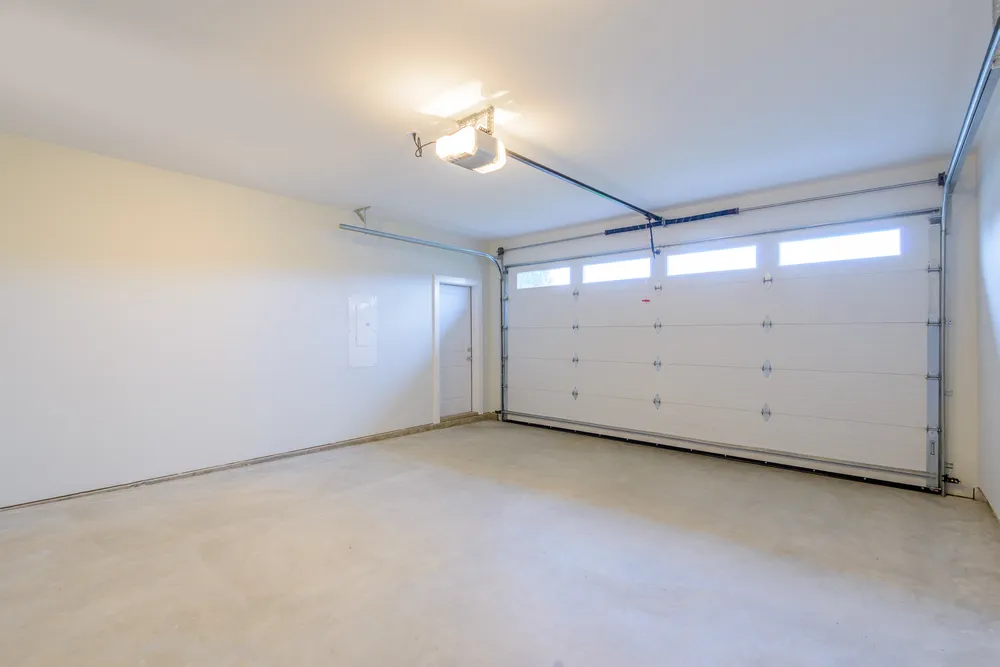
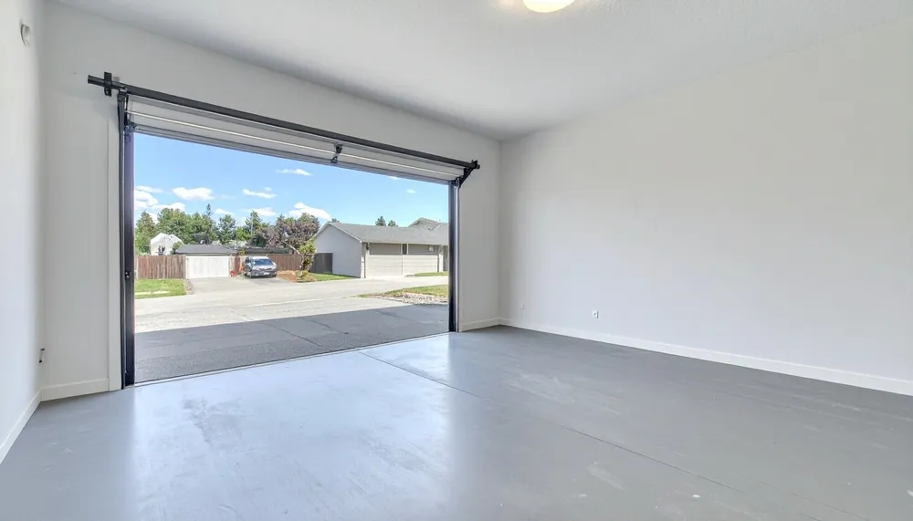

Epoxidová podlaha do garáže: co vydrží a jak probíhá realizace
Každodenní parkování, mokré pneumatiky i kapky oleje dávají podlaze v garáži zabrat. Zjistěte, co zvládne epoxidový povrch, proč záleží na přípravě betonu a jak probíhá realizace od prvního posouzení po návrat auta do garáže.

Garáž často slouží i jako dílna, prostor pro kola nebo místo, kde měníte pneumatiky a ukládáte nářadí. Podlaha tak musí zvládat mnohem víc než jen hmotnost zaparkovaného auta. Přidává se voda, písek, zimní posypová sůl i občas rozlitá provozní kapalina.
Epoxidová podlaha může vytvořit odolný, souvislý a snadno čistitelný povrch. Aby ale v garáži dlouhodobě fungovala, musí její provedení odpovídat skutečnému zatížení a stavu podkladu. Samotné označení „epoxid“ ještě neříká, jakou odolnost můžete očekávat.

Co podlaha zvládne při každodenním parkování?
Správně navržený epoxidový systém pro garáž počítá s opakovanými příjezdy, rozjezdy i zatížením stojícím automobilem. Tvrdý povrch dobře odolává mechanickému namáhání a pomáhá chránit beton před opotřebením.
Rozdíl je ovšem mezi garáží pro jedno osobní auto a prostorem, kde pravidelně opravujete vozidla, přesouváte těžké vybavení nebo používáte zvedák. Bodové zatížení pod podpěrou či kovovou nohou není stejné jako zatížení rozložené přes pneumatiky. Takové využití je proto potřeba zohlednit už při návrhu.
Vyplatí se také rozlišovat tenkovrstvý epoxidový nátěr a silnější litou stěrku. Nátěr více kopíruje strukturu betonu, zatímco litá stěrka vytváří souvislejší nášlapnou vrstvu. Vhodná varianta se vybírá podle podkladu, provozu i požadovaného výsledku.
Olej a chemikálie: odolnost má konkrétní podmínky
Na nechráněném betonu může kapka oleje zanechat skvrnu, která se obtížně odstraňuje. Uzavřený epoxidový povrch usnadňuje úklid a při správné volbě systému chrání podklad před běžným znečištěním z automobilového provozu.
Chemická odolnost ale neznamená, že podlaha snese jakoukoli látku po neomezenou dobu. Rozhoduje konkrétní přípravek, jeho koncentrace, teplota i délka kontaktu s povrchem. Pokud v garáži používáte například odmašťovače, rozpouštědla nebo brzdovou kapalinu, je vhodné jejich působení předem ověřit pro zvolený systém.
Rozlitý olej a další kapaliny proto odstraňujte co nejdříve. Vedle ochrany povrchu tím omezíte i riziko uklouznutí.
Voda z auta a vlhkost v betonu jsou dvě různé věci
Déšť nebo tající sníh přivezený autem patří k běžnému provozu garáže. Vhodně zvolená podlaha s tímto namáháním počítá. Záleží přitom i na provedení detailů u stěn, vrat a případné vpusti.
Jinou situací je vlhkost uvnitř betonového podkladu nebo voda vzlínající zespodu. Tu samotná epoxidová vrstva nevyřeší. Před realizací je potřeba vlhkost změřit, zjistit její příčinu a podle výsledku navrhnout další postup. Pohledově suchý beton nemusí být připravený k aplikaci.
S vodou souvisí také výběr povrchové úpravy. Hladký epoxid není automaticky protiskluzný. Do garáže proto stojí za zvážení strukturované provedení, například s křemičitým pískem. Jeho hrubost je dobré volit tak, aby vyhovovala pohybu po mokré podlaze i běžnému čištění.
Jak probíhá realizace epoxidové podlahy?
Konkrétní postup se přizpůsobuje zvolenému systému. Obvykle zahrnuje tyto kroky:
- Posouzení podkladu a provozu. Kontroluje se pevnost, soudržnost, vlhkost a stav betonu. Současně se řeší, jak budete garáž využívat.
- Mechanická příprava. Broušením nebo jiným vhodným postupem se odstraní nesoudržné vrstvy a připraví povrch pro spojení s dalšími materiály. Následuje důkladné odstranění prachu.
- Opravy a řešení detailů. Upraví se výtluky a podle jejich charakteru také trhliny. Dilatační spáry se musí správně zachovat a ošetřit.
- Penetrace a aplikace vrstev. Na připravený podklad navazuje penetrace a vlastní epoxidová skladba, případně protiskluzová a uzavírací úprava.
- Vytvrzení před používáním. Dodrží se předepsané technologické přestávky a podmínky pro uvedení podlahy do provozu.
U starší garáže si zvláštní pozornost zaslouží mastná místa. Olej může být nasáklý hlouběji v betonu, takže samotné umytí povrchu nemusí stačit. Právě příprava často rozhoduje o tom, zda bude nová podlaha dobře držet.
Kdy můžete znovu zaparkovat a jak podlahu udržovat?
Pochozí povrch ještě nemusí být připravený na zatížení automobilem. Termín návratu auta do garáže se řídí použitým systémem a podmínkami při vytvrzování, zejména teplotou. Přesný čas proto stanovuje realizační firma podle konkrétní skladby.
Při běžné péči pomáhá pravidelně odstraňovat písek a kamínky, uklízet rozlité kapaliny a používat doporučené čisticí prostředky. Bezespárová plocha údržbu usnadňuje, neznamená však nezničitelný povrch. Přetahování těžkých kovových předmětů nebo nevhodné čištění může zanechat stopy i na odolné podlaze.
Podlaha do garáže podle vašich potřeb
V Emplastrum design navrhujeme a realizujeme epoxidové podlahy v Brně a okolí. Pomůžeme vám vybrat řešení podle způsobu používání garáže, očekávaného zatížení i požadovaného vzhledu a zajistíme realizaci na klíč.
V našem showroomu si můžete prohlédnout vzorky, porovnat odstíny a struktury a probrat možnosti provedení. Pro první konzultaci si připravte přibližnou výměru, fotografie současné podlahy a informaci, zda bude garáž sloužit pouze k parkování, nebo také jako dílna.
Domluvte si konzultaci a společně vybereme podlahu, která bude odpovídat tomu, jak svou garáž skutečně používáte.